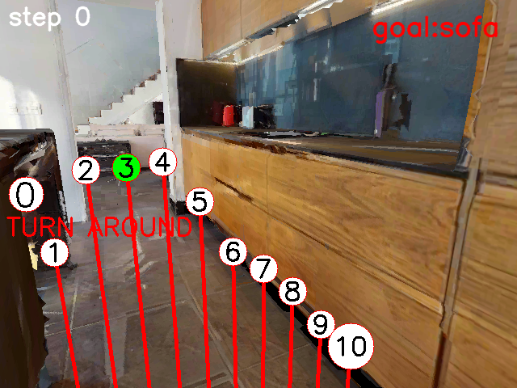
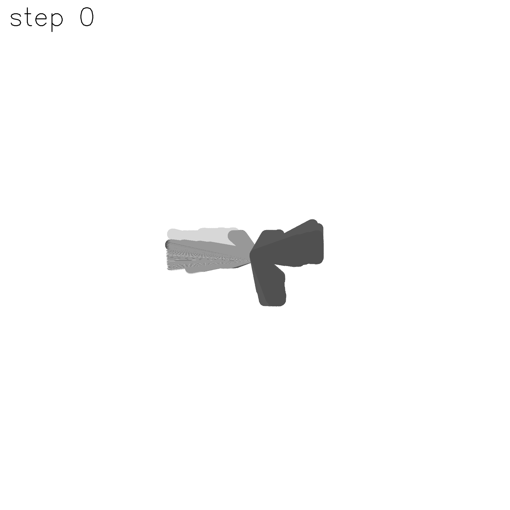
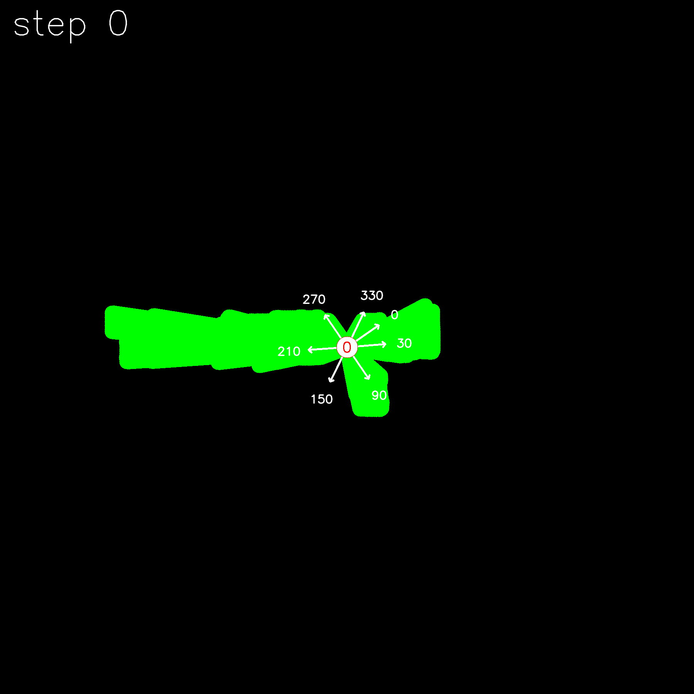
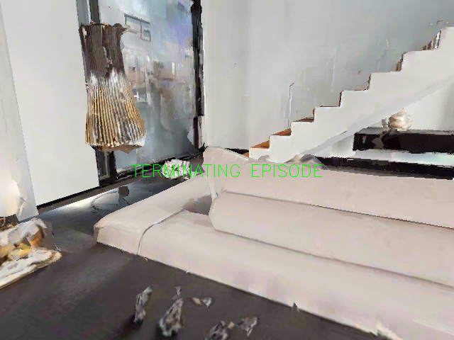
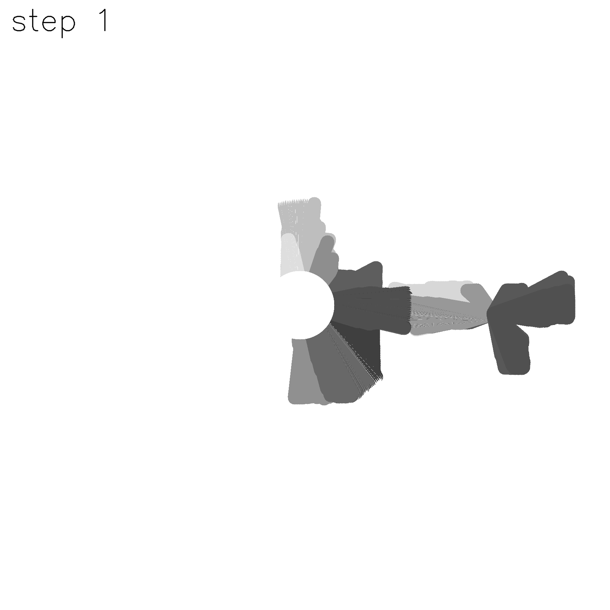
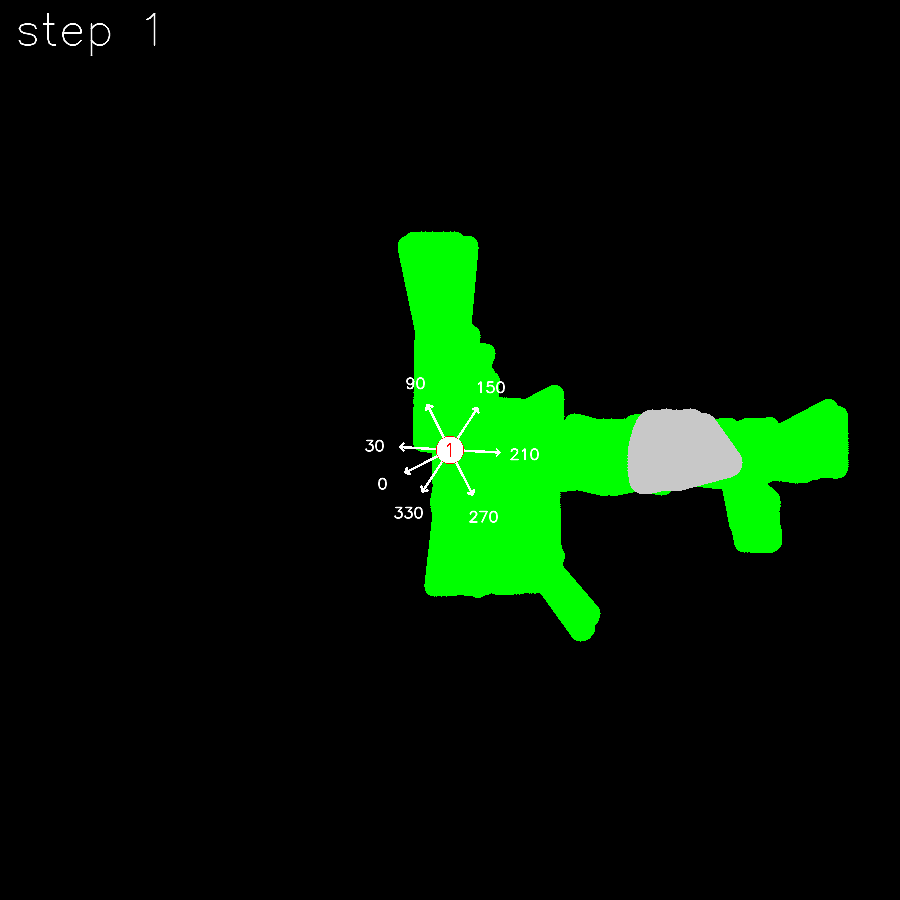

2 archived step directories; 2 text records. Target categories: sofa.
Images are original PNG files. This is an archived qualitative trace, not a rerun of the repaired code. A model goal flag is not a verified success label.






Parsed trace fields